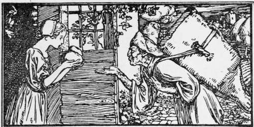
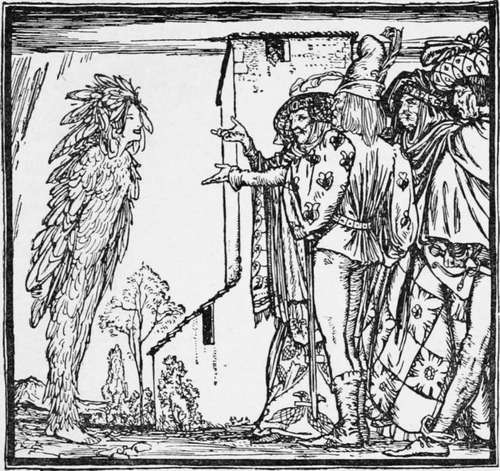

The Forbidden Room
Description
This section is from the book "Household Tales by Brothers Grimm", by Brothers Grimm. Also available from Amazon: Household Tales by Brothers Grimm.
The Forbidden Room
Once upon a time there was a wizard, who changed himself into the form of a poor man, and went about begging from house to house and carrying away all the pretty girls he could find. No one ever knew what became of them, for when they had once disappeared they were never seen again.
One day he went to the door of a man who had three beautiful daughters, looking just like a feeble old beggar, with a basket slung over his shoulder, as if he were collecting the scraps given to him out of charity. He asked for a morsel of food; the eldest girl came out and handed him a piece of bread, and as she did so, he gave her one little touch, and she was at once obliged to jump into his basket.
He then hurried off with long strides and carried her to his house in the middle of a dark wood. Everything in the house was magnificent, and she had but to express a wish for anything and he gave it her at once. "You are happy here with me, dearest one, are you not ? " he said; "for you have everything that your heart can wish for." This went on for some days, and then he told her that he must go away and leave her alone for a little while.
"Here are the house-keys," he said. "You can go where you like, and look at what you like; there is only one room into which I forbid you to enter on pain of death; this little key belongs to it."
He also gave her an egg, and begged her to take great care of it. "Always carry it about with you, if possible," he added, " for if it were to be lost, a great misfortune would happen."
She took the keys and the egg, and promised to carry out his wishes.
As soon as he had left she went over the house, looking at everything from top to bottom. The rooms shone with silver and gold, and she thought she had never before seen anything so splendid. At last she found herself close to the forbidden room, and was going to pass it, when her curiosity became too much for her, and she paused. First she looked at the key—it did not seem to her to be in any way different to the others; then she put it in the lock and gave it a little turn, and—the door flew open. But what a sight met her eyes as she stepped inside! There in the middle of the room stood a block, and on it lay a glittering axe, and all around there was blood upon the floor and the bodies of those who had been seized and cruelly murdered. She was so terrified that she let the egg she held in her hand fall to the ground. She picked it up and saw that there was blood upon it; she tried to wipe it off", but in vain, for rub and scrape as she would, the mark of the blood still remained.
Not long after this, the man returned, and the first things he asked for were the key and the egg. Trembling with fear, she gave them to him, but he knew at once when he saw the mark on the egg, that she had been into the forbidden room. "Since you have been into that room," he cried, "against my will, you shall now go there again against your own. Your life is ended." With these words he threw her to the ground, and dragging her by her hair to where the block stood, he cut off her head and her limbs, so that her blood flowed over the floor, and there he left her with the bodies of his other victims.
" I will now go and fetch the second one," he said; and once again he went to the same house, begging like a poor old man. The second daughter brought him a piece of bread, and he caught her and carried her away as he had the eldest one.
She did not meet with any better fate than her sister; for she was also overcome by her curiosity and looked into the forbidden room, and had to pay for it with her life on the man's return.
He next went and carried away the third sister. Now this sister was wiser and more cunning than the others, and after the wizard had given her the keys and the egg, and had left her, the first thing she did was to put the egg safely away. Then she looked over the house, and, finally, went into the forbidden room. Alas! what did she see! her two dear sisters lying murdered and cut to pieces. But she took the head and the body, and the arms and the legs, of each, and put them carefully together, and she had no sooner done this than the limbs began to move, and the different parts became joined to one another, and both sisters opened their eyes and were alive again. Then they kissed and embraced each other in their great joy.
As soon as the wizard returned he asked for the key and the egg, and when he saw that there was no trace of blood upon this, he said, " You have stood the test, you shall be my wife."
He had now lost all power over her, and was obliged in his turn to do whatever she wished.
"Very well," she answered, "but you must first take a basketful of gold to my father and mother, and carry it to them yourself; meanwhile I will prepare for our marriage."
Then she ran to the little room where she had hidden her sisters, and cried, "The moment has come for me to save you; the villain shall carry you home himself; but be sure you send someone to help me as soon as you get there." She put them both in a basket and covered them with gold, so that nothing of them could be seen. Then she called the wizard, and said to him, " Now carry away this basket, and mind you do not stop on the way to rest, for I shall be watching you from my little window." The wizard slung the basket over his shoulder and went off, but he found it such a weight to carry that the perspiration ran down his face, and he felt ready to die of exhaustion. He longed so to rest, that he stopped and sat down, but immediately a voice called out from the basket, "1 am watching from my little window; I can see you stopping to rest; will you please to go on! " He thought it was his bride calling after him, so he got up and went on. Presently he sat down again, but the same voice called out, " I am watching you from my little window; I can see you stopping to rest; will you please to go on at once! " And as often as he stopped to rest, he heard the same voice, so that he was obliged to go on till, gasping for breath, he had carried the girls and the gold into the parents' house.
At home, meanwhile, the bride was preparing for the wedding festivities. She took one of his victims' heads, put a smart head-dress and wreath of flowers upon it, and placed it looking out of the garret window. She then invited all the wedding-guests, and when that was done, she got into a barrel of honey, and then cut open a bed and rolled herself in the feathers, so that she looked like some wonderful bird, and no one would have known who she was. Then she left the house, and as she went along she met some of the wedding guests, who said—
Fitcher's bird, whence come you I pray?
I come from Fitcher's house today
And what is the young bride doing now?
She has swept the house, all round and about,
And sits at ther window looking out"
By and by she met the bridegroom returning, and he also said—
Fitcher's bird, whence come you I pray?
I come from Fitcher's house today
And what is the young bride doing now?
She has swept the house, all round and about,
And sits at ther window looking out"
The bridegroom looked up and saw the head at the window, and thinking it was his bride, he nodded and smiled at it. But no sooner were he and his guests assembled in the house, than the friends arrived who had been sent by the sisters. They locked all the doors, so that no one might escape, and then set fire to the house, and the wizard and all his companions were burnt to death.
Continue to:
- prev: The Man In The Bag
- Table of Contents
- next: Karl Katz
Tags
fairy tales, children's stories, brothers grimm, household tales